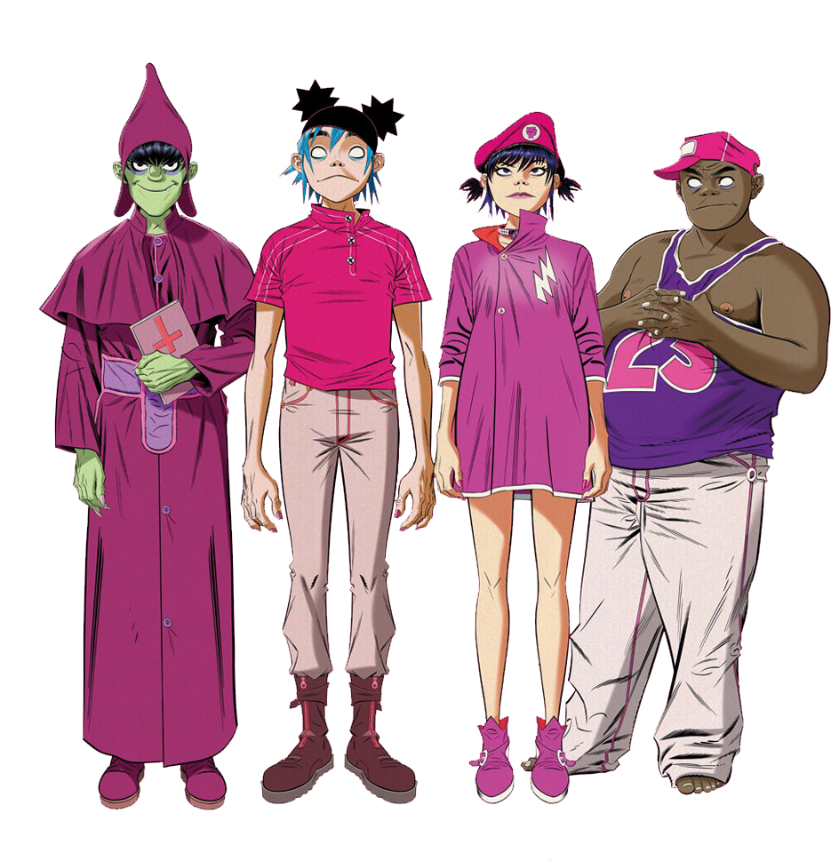

La idea de crear la banda surgió mientras Hewlett y Albarn veían la MTV. En una entrevista se comentó: "Si tú miras la MTV demasiado tiempo terminas diciendo «¿Qué demonios? Aquí no hay nada sustancial.», así que tuvimos la idea de una banda de animación, algo que sería como una opinión sobre este tema.
La banda inicialmente se identificó como "Gorillaz" y el primer tema que grabaron fue "Ghost Train", el cual fue posteriormente lanzado como una cara B de su sencillo "Rock the House" y como parte del compilado de caras B, G-Sides. Los músicos detrás de la primera encarnación de Gorillaz incluían a Albarn, Del the Funky Homosapien, Dan the Automator y Kid Koala, quienes trabajaron previamente juntos en la canción "Time Keeps on Slipping" para el disco debut de Deltron 3030.
Gorillaz
Gorillaz es una banda virtual inglesa creada en 1998 por Damon Albarn y Jamie Hewlett. La banda está compuesta por cuatro miembros ficticios: 2-D, Noodle, Murdoc Niccals y Russel Hobbs. La mayoría de sus canciones junto con todo su universo ficticio, se presentan a través de vídeos musicales animados, de animación tradicional y animación por computadora, entrevistas y pequeños cortos animados. En la realidad, Albarn es el único miembro permanente de la banda.
